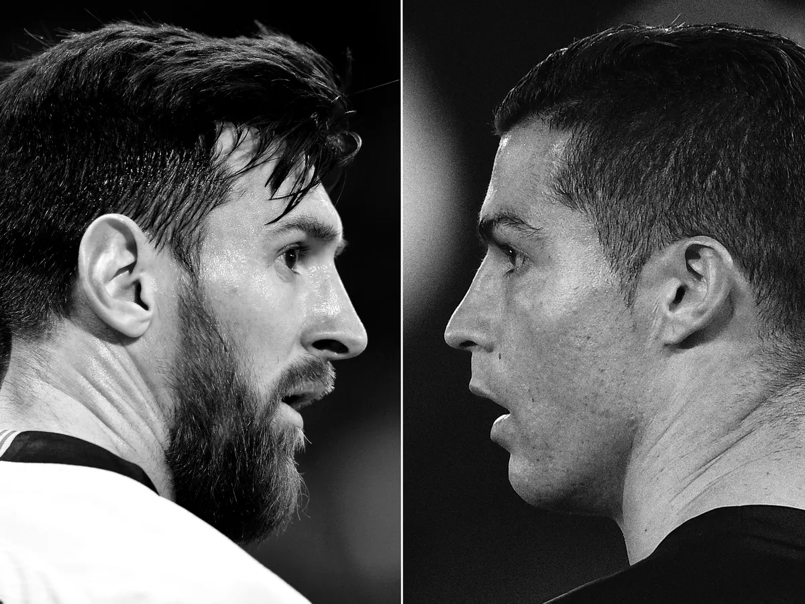
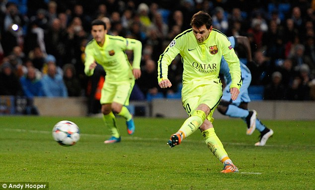
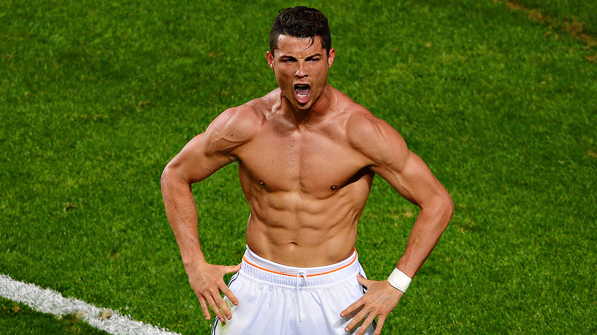
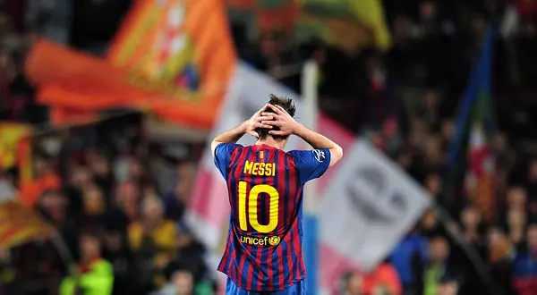

Battle of The Goats

Click to Shoot with Ronaldo or Messi
Ronaldo
Messi
Click to see if Ronaldo makes it.
Kick!
Click to see if Messi makes it

Shoot!
GOALL!! Ronaldo's the greatest of all time!!

Messi's a fake goat sadly
